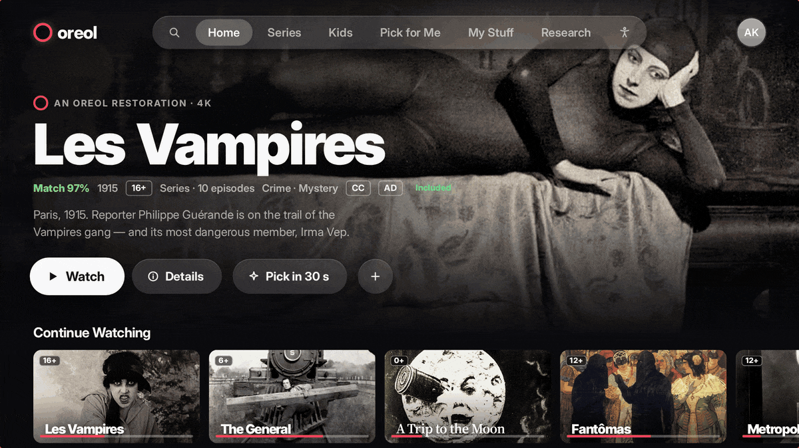
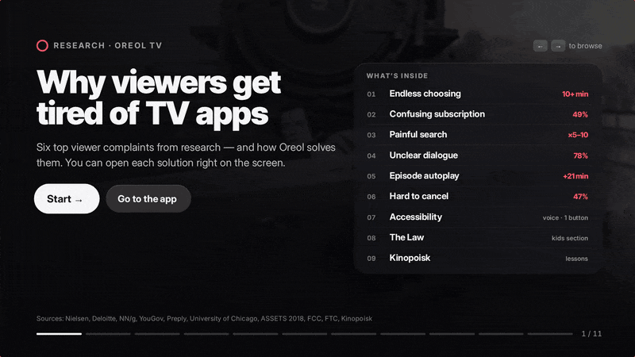
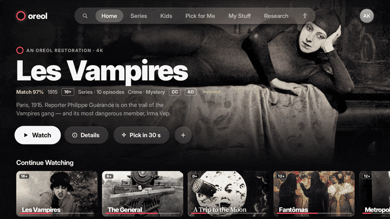
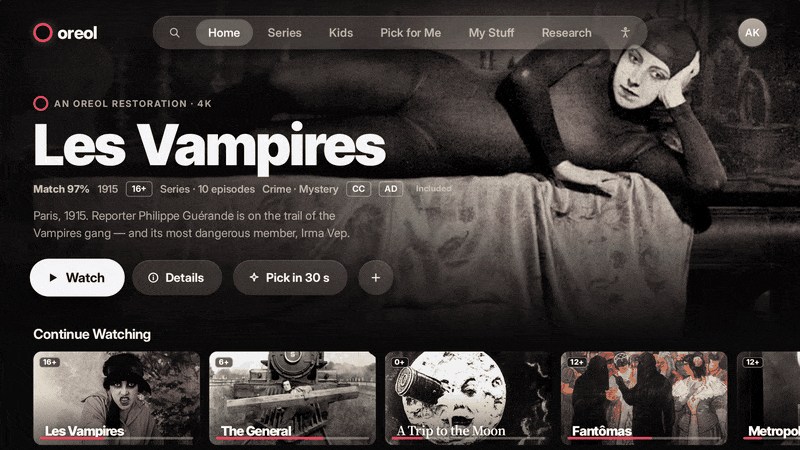
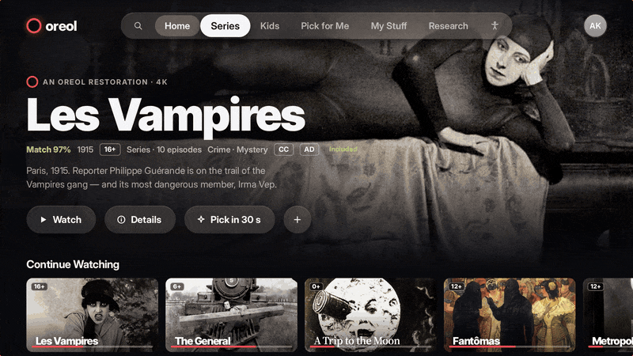
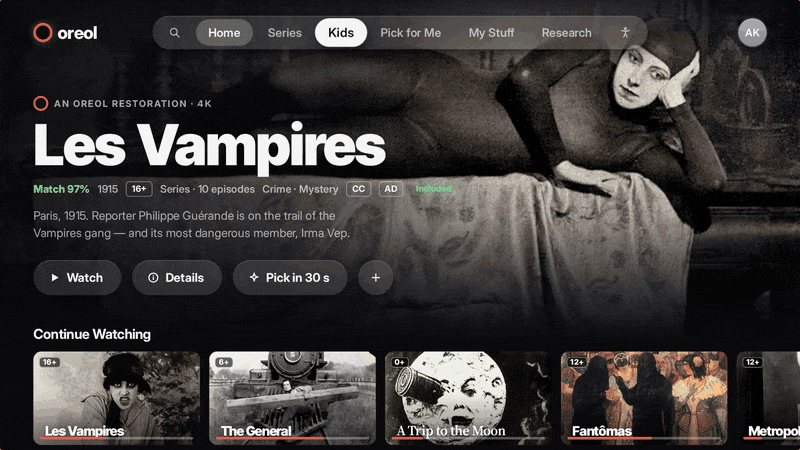
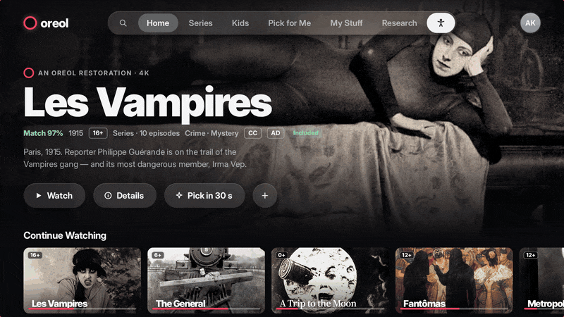
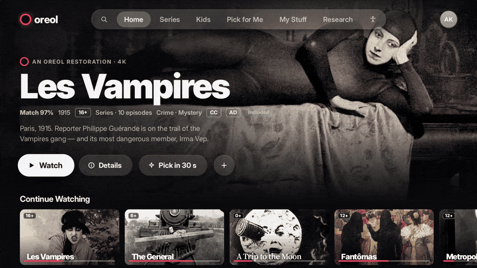
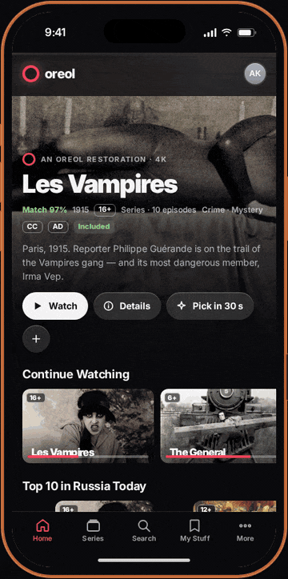

Oreol TV — Smart TV streaming app

Brief
A streaming service for the TV. A five-button remote instead of a mouse and keyboard, a viewer three meters from the screen, family on the couch.
The goal: remove what viewers complain about in TV apps — endless choosing, unclear prices, painful search, hard-to-hear dialogue, endless autoplay and subscriptions that are hard to cancel.
Approach
I started with research: the six most common complaints from Nielsen, Deloitte, Nielsen Norman Group, YouGov, Preply and University of Chicago reports. Each complaint gets one interface solution that can be shown right on the screen.
Outcome
A working 1920×1080 prototype: remote navigation, focus states, 15+ screens, light and dark themes and a mobile version for iPhone. The research is built into the interface itself — the case can be presented straight from the TV.
Open prototype >>>Showreel
[ 09 scenes · Recorded in the prototype ]
Six problems, six solutions. Each one opens with a “Show on screen” button, right on top of the slide.

Three questions — mood, time, who’s watching — instead of half an hour of scrolling the catalog.

Subtitles and audio description in one press. Before the next episode: 10 seconds and “Enough for today”.

Genre filters and a dedicated “With audio description” filter — what Kinopoisk is missing.

An age rating on every cover, games with no purchases or chat. Leaving the profile or buying needs an adult’s PIN.

A screen reader for whatever is in focus, single-switch control, large text and high contrast.

“Find a comedy” — and the query is already typed. No on-screen letters, no arrows.

The mobile version: a five-tab bottom bar, iOS safe areas and an Apple TV–style profile picker.
Research
[ 06 pain points · 06 solutions ]“I browse for half an hour and watch nothing”
A “Pick in 30 seconds” button: three questions and one ready-to-play film. Nielsen
“I don’t understand what my subscription includes”
Every card says “Included” or “Rent · 199 ₽”. You see the price before you click. Nielsen
“Typing a title with the remote is torture”
Results after every letter, voice search, and typing on your phone via QR code. Nielsen Norman Group
“I can’t make out what the characters are saying”
“Clear speech” and subtitles right in the player, one press away. Preply · YouGov
“One episode turned into four”
Trailers don’t autoplay. Before the next episode: 10 seconds and “Enough for today”. University of Chicago
“I pay too much, and canceling is hard”
My Stuff shows the price and the next charge date. Pause or cancel in two presses. Deloitte
Accessibility
Blind people rely on voice assistants, but they’re held back by speech they can’t speed up and answers they can’t shorten. So Oreol’s screen reader says “3 of 10”, and both speed and detail are adjustable.
For people who can press only one button there’s a scanning mode: the highlight moves through rows on its own, then through cards. For people who’d rather not type — voice, typing on the phone and a picker that needs no search.
The Law
The kids section follows Russian Federal Laws 436-FZ, 152-FZ and 38-FZ, the EU’s EAA and DSA, the UK ICO Children’s Code and the US CVAA and COPPA: an age rating on every cover and before every title, a child’s data only with parental consent, no ads, no autoplay and no purchases without a PIN.
Lessons from Kinopoisk
What we adopted: subtitles for the deaf and audio description from day one, and accessibility settings that live in the profile. What we did better: a “With audio description” filter, AD and CC badges on cards and clickable genres — the things Kinopoisk HD is criticized for missing.
System
Remote navigation follows a D-pad map: every row remembers its own focus, focus holds in the second position, and the edge has an elastic bounce. Apple TV–style spring animation, glass materials, light and dark themes.
Type: Inter with optical sizes (the closest open alternative to SF Pro) and Inter Tight Black for Netflix Sans–style headlines. The stills are from public-domain films.
Delivered
UX research · information architecture · D-pad navigation map · focus states · UI for 15+ screens · interactive prototype · mobile version · accessibility.